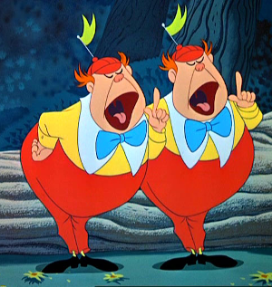

In what concerns the continuous evaluation solving exercises grade during the semester, you should submit until 23:59 of November 1st
(this exercise will still be available for submission after that deadline, but without counting towards your grade)
[to understand the context of this problem, you should read the class #04 exercise sheet]
In this problem you should submit a function as described. Inside the function do not print anything that was not asked!
The name of the .py source file you submit to Mooshak should NOT start with a digit (you will get an error if you submit it like that).

After the first round of Python slicing challenges, Tweedledum scratched his head and said, "I need something more... something that requires not just slicing but also a bit of logic. A true test of wits!"He pondered for a moment, and then, with a gleam in his eye, declared, "I want to see if our student can tell whether a word is a palindrome!"
Tweedledee, amused by his brother’s increasing demands, asked, "And what is a palindrome, dear brother, in case the student has forgotten?"
With a grin, Tweedledum explained, "A palindrome is a word that reads the same forward as it does backward. For instance, 'madam' and 'racecar' are palindromes. I want to see if the student can use slicing to check this!"
Write a function palindrome(word) that given a string word constituted by lower case letters, returns True if the word is a palindrome and False if it isn't.
The following limits are guaranteed in all the test cases that will be given to your program:
| 1 ≤ |word| ≤ 100 | size of the input string |
| Example Function Calls | Example Output |
print(palindrome("wow"))
print(palindrome("racecar"))
print(palindrome("python"))
print(palindrome("abcdba"))
|
True True False False |